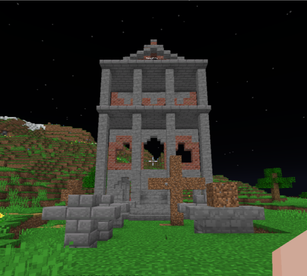

Gherțoaia este un sat ficțional, creat de către edx. Cuvântul „Gherțoaia” derivă de la orașul situat în Cluj-Napoca, numit „Gherla”, unde, se presupune că membrul buba ar locui. Prima datare a acestui sat ficțional se regăsește în vara lui 2020, unde se utiliza termenul de „Gherțoi” care ar însemna o persoană de origine romă sau stereotipic asemănător frazei „a fi țigan” folosit unei persoane care nu este de etnie romă
Pe lângă asta, locurile unde locuiesc acești „Gherțoi” se numeau „Țiglu”, însemnând un cort țigănesc.
Casa unui sătean Gherțoian
Atenție. Toată povestea relatată începută cu această secțiune este complet ficțională, iar orice asemănări și/sau întâmplări asemănătoare în viața reală sunt complet coincidențe.
Primele mențiuni ale satului Gherțoaia datează din anul 1433 în papirusul maghiar „Cucerirea Țării - „Meghódítani a királyságot”” unde se fac mențiuni unui sat suprapopulat în mijlocul Transilvaniei.
„În timpul expediției către zona Muntenia, cavalerii maghiari trec printr-un oraș foarte populat în inima țărișoarei maghiare - Transilvania -, un sat care la intrare avea o pancardă din fier pe care scria „Gherțuioaia” ”
- Jurnalul unui maghiar găsit într-un wc din Hășdate recent
De atunci și până în 1452 nu au existat alte mențiuni.
În anul 1453, într-o vizită regală a mânei dreapte a regelui maghiar, cavalerii maghiar împreună cu mâna dreaptă regelui maghiar, dau de satul „Gherțuioaia” unde, fostul renascentist, intitulat de documentul istoric „Ostenemia Gherțuioaiană”: Împăratul Gherțuioaiei, pe numele său Pavel Ți. Anescu al IV-lea atacă îmrepună cu localnicii pe cavalerii maghiari.
Lupta a durat doar 14 ore. Împăratul Pavel Ț. s-a folosit de tactica pământului pârjolit, suferind daune grave infrastructurii.
Cavalerii maghiari aveau un număr de 28 de cavaleri și 10 arcași. Armata Gherțuioaiană avea un număr de 799 de osteni și 100 de arcași. Bătălia a fost câștigată de Pavel Ț. cu daune minime, dar daune majore infrastructurii.
În 1472, după un val de anexări de către regatul maghiar, Gherțuioaia avea să fie și ea cucerită, și reabilitată într-un sat nou, numit „Gjertsaiesvár”
În documentul istoric „Ostenemia Gherțuioaiană”, se menționează că noul împărat al Gjertzaiesvár-ului este un maghiar numit „Dezo Gyorgy”.
În anul 1899, în documentul istoric „Ostenemia Gherțuioaia” se menționează ultima datare a unui rege maghiar, „Anatolii” care este ucis de soldați români în timp ce era la baie.
„În noaptea din anul 1899, la satul „Gjertzaiesvár”, zece osteni românești dau buzna sultanului bozgor „Antatalonii”*1, care este străpuns pînă este lăsat fără de suflare în timpul șederii sale la tronul lui, toaleta publică a satului.”
Ostenemia Gherțuioaiană - Volumul 2
*1 = numele scris greșit de autorul volumului
Ca efect al consecinței, sătenii „Gjertzaiesvár” sunt obligați să abdice unei culturi românești. Cine nu abdica ar fi fost ars de viu de către noul Împărat gherțoian „Paul Țintă Adrianopol al XX-lea”.
Din 438 de săteni maghiari, doar 5% au abdicat. Restul de 95% au fost uciși, lăsând satul cu o populație de 22 de săteni
Până în anul 1918, satul rămâne neatins.
În anul 1918, după unirea țărilor române, satul „Gjertzaiesvár” primește un influx mare de români. Ca fapt al unirii, satul este obligat să își schimbe numele.
Împăratul „Gjertzaiesvár” Paul Țintă Adrianopol al XX-lea decide să redenumească „Gjertzaiesvár” în „Gherțuoaia” pentru a respecta tradiția veche.
Ca drept Împărat al istoricului oraș regesc „Gherțuioaia”, redenumesc satul pătat de maghiar în „Gherțuoaia” pentru a păstra moravurile de demult pierdute.
-Discurs ținut de Paul Ț.
Nu se știe foarte multe ce s-a întâmplat după, deoarece din câte se știe, satul „Gherțuoaia” și-a închis toate granițele și a rămas izolat până în anul 1988.
În anul 1988, numele Gherțoaia este menționat de ziarul „Splaiul Hășdățean” unde atestă un oraș la marginea Clujului intitulat „Gherțoaia”.
Ziarul menționat mai sus joacă un rol foarte important în povestea Gherțoaiei, astfel, ziaristul jurnalist se deplasează în Gherțoaia să afle mai multe despre acest sat descoperit.
Ziaristul pe numele de „David Vegan ( pronunție: „Ve-găn” )” începe să documenteze satul. Acestea sunt informațiile care reies:
M-am deplasat în data de 14 noiembrie 1988 în acest sat mitic [...] unde am descoperit un surplus de săteni ardeleni.
Am luat reportaje de la diferiți gherțoi [...] care mi-au relatat și demonstrat [...] că ei nici măcar nu știau că nu mai sunt sub asediu maghiar sau că România este comunistă!
Am făcut un scurt recensământ [...] unde am descoperit că satul acesta are o populație de 44 de persoane unde 5% dintre ei sunt maghiari.
Am discutat și cu [...] primarul Gherțoian, pe numele său Pavel Țintescu Anescu care mi-a spus că [...] defapt nu este primar, ci „Rege” și am fost alungat.
-Reportaj Splaiul Hășdățean 1988 „Satul Mitic”
În anul 2008, România recunoaște satul Gherțoaia ca un sat românesc și alocă 50 de lei pentru PIB-ul Gherțoaia.
În anul 2009, România alocă încă 100 de lei satului pentru dezvoltare rurală.
În anul 2011, se țin primele alegeri locale pentru noul primar gherțoaia. Fostul primar, din anul 2001 până în 2011 a fost „Paulică Și. A.”. Pe data de 4 ianuarie 2012, a fost ales noul primar gherțoaia „Paul Ți. A.” care a avut următorul discurs la canditatură:
Atenție dragii mei localnicii gherțoieni, familia mea a avut 43 de generații în acest sat primordial, și doresc să continui tradiția alegerilor excelente în acest sat cu potențial incredibil! Alege-ți-mă pe mine ca noul primar și vă promit un sat precum n-a văzut România! Și vă promit că vom anihila satul rival Hășdate!
-Paul Ți. într-o seară beat la cârciumă
Primarul Gherțoaiei 2012-prezent
În anul 2014, primarul Paul Ți. primește un buget de 400 de lei de la stat, pe care îl investește în păcănele, unde, câștiga o sumă de 24.000 RON, pe care, îi folosește pe casa lui pentru a o reabilita.
Casa primarului văzută din profil
Casa primarului văzută din față
În anul 2016, primarul ține o strângere de fonduri pentru dezvoltare rurală, după ce statul a refuzat să mai furnizeze satul cu bani după acțiunile primarului, unde a strâns o sumă de 1.233,80 RON, pe care, desigur, i-a băgat în dezvoltare rurală... în curtea lui. Și-a făcut o pișcină și un bar.
În prezent, satul Gherțoaia are o populație de 22 de săteni fără primar. În mod special, și macabru, față de orice alt sat/oraș din România, satul Gherțoaia dispune de un propriu guvern dictatorial numit „Dictatura Gherțoiană” condusă de regele „Paul Ți. A”.
Niște legi notabile din „Condoiul Dictatorial de Legi și Repercursiuni Gherțoaia” sunt:
Legea este mai presus decât cetățenii.
Cuvântul regelui este lege.
Gherțoaia este un stat suveran, unitar, independent. În frunte, se află regele statului suveran, urmată de clasa lucrătorilor, urmată de clasa săteanului.
Sătenii nu au dreptul de a comenta despre guvern sau orice organ guvernamental.
Sătenii au dreptul de a parcurge liniștit și fără temere străzile regatului.
Dreptul de vot este legal pentru bărbații de peste 28 de ani și femeilor de peste 40 de ani.
La fiecare 25 de metrii, trebuie să existe o sală de jocuri
Nu există posibilitatea plecării din regat.
Orice Hășdățean trebuie dat afară din regat și/sau nu trebuie să îi fie permisă intrarea în regat.
Acestea sunt doar unele legi notabile din constituția Gherțoaiei. Desigur, din afară, este văzut ca o chestie complet ilegală iar statul român nu arată interes pentru rezolvarea cazului.
Un recensământ realizat de un Hășdățean în 2024, arată că în sat, exista 22 de oameni, 2 oameni de etnie maghiară. Religia prezentă este în masă 98% religie inventată de către rege iar restul 2% nu se cunoaște.
În sat există 2 partide oficiale, Partidul Gherțoian Suervan ( PGS ) condus de primar și Fuziunea Gherțoiană de Moravuri ( FGM ) condusă de primărie.
Totuși, mai există un partid neoficial, realizat de cei 2 maghiari numit Uniunea Restaurării Țaiului Unguresc ( U.R.T.U ) condusă de cei 2 maghiari.
De-alung-ul timpului, au existat nenumărate dezbateri între Gherțoaia și diferite sate/orașe/instituții e.t.c din diferite metode. Cele mai notabile sunt:
Hășdate a fost responsabil pentru popularea satului Gherțoaia. Totuși, premierul hășdățean D. Eduard C. atunci când avea o „amicală” cu primarul Gherțoaia în anul 2008, unde aveau să se bată în primăria Gherțoaia, unde Paul Ți. pierde și îi interzice premierului hășdățean să mai intre în Gherțoaia.
Bătălia dintre D. Eduard C. ( edw27 ) și Paul Ți. ( eyyyyyyyyyy ) înregistrată de camera de supraveghere din primărie
Primăria Gherțoaiei
Într-o vizită a Reprezentantului Dâmbovițean L. Eduard. A. în Gherțoaia în anul 2017, a constat un trai de viață inadecvat standardelor românești.
În vizita mea la satul Gherțoaia pentru posibile întruniri de beneficiere pentru ambele echipe, am constat că Gherțoaia este un sat cu un trai de viață icnredibil de înjositor, săli de jocuri peste tot, mizerie, oameni care te înjură când te uiți la ei, oameni mâncând pietriș cu apă ș.a.m.d. Este complet inadmisibil așa ceva.
-Reprezentantul Dâmbovița la Conferința de Presă Târgovșite din 2017
După aceste cuvinte, primarul Gherțoaia a interzis accesul Dâmbovițenilor în Gherțoailor unde chiar a făcut un mesaj de presă.
Multă muie dâmbovița și reprezentantului dar mai ales hășdățeanului ăla borât.
-Paul Ți. reportaj din Passat
În caz contrar celor de mai sus, Paul Ți. are o relație foarte bună cu Purtătorul de Cuvânt V. David V. a Clujului, ambii chiar având o relație intimă activă ( Țin să iterez că homosexualitatea este ilegală în Gherțoaia ).